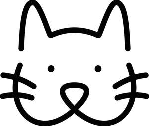

Trade Mark Journal No.2025/014 4 April 2025
UK00004173784 14 March 2025 (18,21,31)
Mark 1

Mark 2
- Class 18
- Leather and imitations of leather; Luggage and carrying bags; Umbrellas and parasols; Walking sticks; Whips, harness and saddlery; Collars, leashes and clothing for animals; Pet clothing; Pet leads; Garments for pets; Capes for pets; Hats for pets; Leashes for pets; Collars for pets; Clothing for domestic pets; Bags for carrying pets; Collars for pets bearing medical information; Pet clothing; Pet apparel; pet collars; pet bellybands; pet shoes; pet leashes; pet leads; pet coats; pet parkas; Raincoats for pets; Rawhide chews for pets; pet waste bag dispensers adapted for use with leashes; Animal harnesses; Animal covers; Animal apparel; Animal leashes; Animal carriers [bags]; Costumes for animals; Leggings for animals; Leads for animals; Leashes for animals; Collars of animals; Harness for animals; Covers and wraps for animals; tote bags, bags.
- Class 21
- Household or kitchen utensils and containers; Cookware and tableware, except forks, knives and spoons; Combs and sponges; Brushes, except paintbrushes; Brush-making materials; Articles for cleaning purposes; Unworked or semi-worked glass, except building glass; Glassware, porcelain and earthenware; Electronic pet feeders; Pet drinking bowls; Automatic pet feeders; Pet grooming glove; Pet treat jars; Electric pet brushes; Pet feeding dishes; Pet feeding bowls; Combs for pets; Toothbrushes for pets; Cages for pets; Brushes for pets; Trays (Litter -) for pets; Deshedding combs for pets; Deshedding brushes for pets; Cages for carrying pets; Pets (Cages for household -); Litter boxes for pets; Litter trays for pets; Feeding vessels for pets; Litter trays for pet animals; Pet paw cleaners, non-electric; Pet feeding and drinking bowls; Brushes for grooming pet animals; De-shedding combs for pets; Wire cages for household pets; Household containers for storing pet food; Scoops for the disposal of pet waste; Plastic containers for dispensing food to pets; Plastic containers for dispensing drink to pets; Non-mechanized pet waterers in the nature of portable water and fluid dispensers for pets; pet food scoops; Small animal feeders; Animal grooming gloves; Toothbrushes for animals; Combs for animals; Animal-activated pet feeders; Scoops for the disposal of animals excrement; Litter scoops for use with pet animals.
- Class 31
- Pet foods; Pet foodstuffs; Pet beverages; Pet animals; Edible pet treats; Sand for pet toilets; Sanded paper for pets [litter]; Edible bones and sticks for pets; Pet foods in the form of chews; Pet treats in the nature of bully sticks; pet snacks; pet food; pet treats [edible]; Bones for pets; Litter for pet; Food preparations for pets; Edible chews for pets; Foods in the form of rings for feeding to pets; Cat litter; Cat biscuits; Foodstuffs for cats; Animal food; Animal beverages; Living animals; Food for animals; Forage for animals; Edible chews for animals; Bedding materials for animals; Meal for consumption by animals; Edible chewing products for domestic animals.
BUDDY BITES LIMITED
Representative: Page, White & Farrer Limited